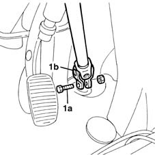

4110A40 steering control shaft joints - tighten screws
- Path
- Procedures > 41 STEERING > 4110 STEERING CONTROL AND LINKAGE > 4110A steering control > 4110A40 steering control shaft joints - tighten screws
- Kind
- repair procedure (removal / refitting; the operation number is the code)
- Applies to
- all engines; all production periods
- Interactive page
- https://sloeber94.github.io/elrnDB-fMltpl/en/#/2891678
Applies to: all engines; all production periods
1. Tighten the fixing bolt (1a) for the steering shaft coupling fixing element (1b) to the recommended torque.
 | Fastening | Component | Ø | Value (daNm) |
|---|---|---|---|---|
- | Bolt | STEERING SHAFT JOINT FASTENERS | M8 | 2.5 |
